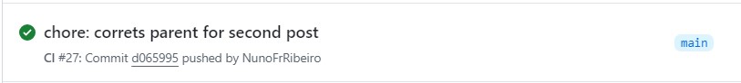
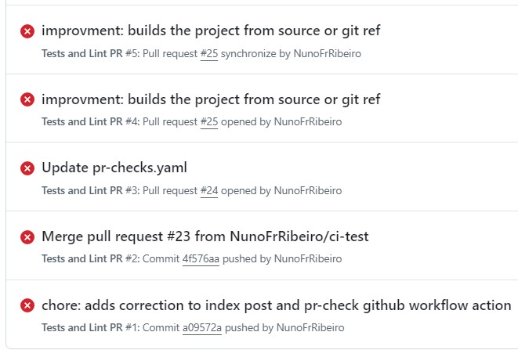

whoami
Nuno Ribeiro or NunoFrRibeiro
Civil Engineer over the last decade
DevOps Engineer @ Cleva Solutions
so I went from this
to this
(expect a few memes)
CI/CD
YAML is a pain
and you know it 😬
Ready to commit that code?
How it starts 👉
name: CI
on:
push:
branches: [main]
jobs:
ci:
name: ci
runs-on: ubuntu-latest
steps:
- name: Checkout repository
uses: actions/checkout@v4
- name: Setup Go
uses: actions/setup-go@v5
with:
go-version: '1.21.x'
- name: Install dependencies
run: go get .
- name: Build
run: go build -v ./...
- name: Test with the Go CLI
run: go test
40 days of code commits
365 days of code commits later
# Foobar pipeline
# Include the Common CI pipeline parameters.
include:
- project: 'foo/bar/foobarproject/cicdtemplate'
file: '/Common.gitlab-ci.yml'
#- /force-app/ui-tests/pipeline.yml
stages:
- build-metadata-package
- run-js-tests
- validate-package
- deploy-package
- run-unit-tests
- run-api-tests
- run-ui-tests
- integration
####################################################
# Builds the Metadata Package, builds the Package
# files and Destructive changes
####################################################
build-metadata-package:
stage: build-metadata-package
except:
variables:
- $SCRATCH_DISABLED
- $TEST_DISABLED
only:
variables:
- $FORCE_DEVELOP_RUN
- $FORCE_MASTER_RUN
- $FORCE_VALIDATE_MASTER
- $FORCE_RUN
- $FORCE_DEPLOY
- $CI_COMMIT_REF_NAME == 'test-integration'
- $CI_COMMIT_REF_NAME == 'develop'
- $CI_COMMIT_REF_NAME == 'master'
- $CI_COMMIT_REF_NAME == 'release/uat'
allow_failure: false
script:
- build_diff_files
artifacts:
paths:
- deploySource
- deploy
environment:
name: foobarproject/$CI_COMMIT_REF_SLUG
# Merges release-branch to develop
####################################################
integration-vp-to-develop:
stage: integration
only:
variables:
- $CI_COMMIT_REF_NAME == 'release/uat'
script:
- merge_branches origin/release/uat develop
environment:
name: foobarproject/$CI_COMMIT_REF_SLUG
####################################################
# Merges release-branch to develop
####################################################
integration-develop-to-test:
stage: integration
only:
variables:
- $CI_COMMIT_REF_NAME == 'develop'
script:
- merge_branches origin/develop test-integration
environment:
name: foobarproject/$CI_COMMIT_REF_SLUG
####################################################
# Deploys the source Package
####################################################
deploy-package:
stage: deploy-package
script:
- authenticate $FOOBAR_USERNAME $CLIENT_ID "ORG" $LOGIN_URL
- deploy_baz $FOOBAR_USERNAME "60"
rules:
- if: '$DEPLOY_DISABLED == "1"'
when: never
- if: '$TEST_DISABLED == "1"'
when: never
- if: '$CI_COMMIT_REF_NAME == "test-integration"'
when: on_success
- if: '$CI_COMMIT_REF_NAME == "develop"'
when: on_success
- if: '$CI_COMMIT_REF_NAME == "release/uat"'
when: on_success
- if: '$FORCE_RUN == "1"'
when: on_success
- if: '$FORCE_DEVELOP_RUN == "1"'
when: on_success
- if: '$FORCE_DEPLOY == "1"'
when: on_success
####################################################
(🙏 🙏)
Enter The

How does it try to solve this problem?
By running your application delivery pipelines in containers
type MyModule struct{}
// Build and publish Docker container
func (m *MyModule) Build(
ctx context.Context,
// source code location
// can be local directory or remote Git repository
src *dagger.Directory,
) (string, error) {
// build app
builder := dag.Container().
From("golang:latest").
WithDirectory("/src", src).
WithWorkdir("/src").
WithEnvVariable("CGO_ENABLED", "0").
WithExec([]string{"go", "build", "-o", "myapp"})
// publish binary on alpine base
prodImage := dag.Container().
From("alpine").
WithFile("/bin/myapp", builder.File("/src/myapp")).
WithEntrypoint([]string{"/bin/myapp"})
// publish to ttl.sh registry
addr, err := prodImage.Publish(ctx, "ttl.sh/myapp:latest")
if err != nil {
return "", err
}
return addr, nil
}import { dag, Container, Directory, object, func } from "@dagger.io/dagger"
@object()
// eslint-disable-next-line @typescript-eslint/no-unused-vars
class Ci {
/**
* example usage: "dagger call ci --source ."
*/
@func()
async ci(source: Directory): Promise<string> {
// Use Golang module to configure project
var goProject = dag.golang().withProject(source)
// Run Go tests using Golang module
await goProject.test()
// Get container with built binaries using Golang module
var image = await goProject.buildContainer()
// Push image to a registry using core Dagger API
var ref = await image.publish("ttl.sh/demoapp:1h")
// Scan image for vulnerabilities using Trivy module
return dag.trivy().scanContainer(dag.container().from(ref))
}
}Why and How do I use dagger?
Tired of YAML/GROOVY/….
Let’s look at some Code (not yaml)
DEMO TIME
(🙏 to the demo gods!)
You can check out the demo source code @
Obrigado!
Join Discord! dagger.io
Try the Quickstart! docs.dagger.io